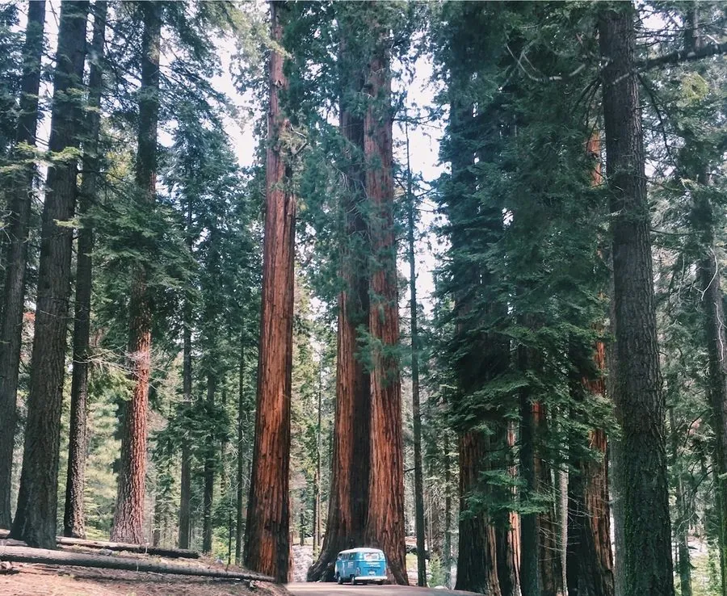

乔木 · 植物界
巨杉 Sequoiadendron giganteum

美国内华达山脉西坡的巨型针叶树，树体体积冠绝世界，树皮厚而耐火，寿命可达三千年，被称为“世界爷”。
- 分类
- 门裸子植物门纲松柏纲目松柏目科柏科属巨杉属
- 栖息环境
- 美国加州内华达山脉西坡海拔 1400–2500 m 的山地，喜光耐寒
- 地理分布
- 美国加利福尼亚州内华达山脉西坡的狭窄地带，仅约 70 个天然种群
- 保护级别
- IUCN 濒危（EN）；受美国国家公园体系保护
物种志
巨杉为常绿针叶大乔木，树高可达 90 m，胸径可达 8 m，是地球上体积最大的单体树木；树干下部粗壮、上部渐细，树皮红褐色、厚可达 60 cm，纤维质松软，含大量单宁，可有效抵御林火与病虫害。叶片鳞状或钻状，紧贴小枝；雌雄同株，球果卵状长圆形，长约 5–7 cm，成熟需 2 年，种子具翅。
巨杉仅分布于美国加利福尼亚州内华达山脉西坡约 250 km 的狭窄地带，海拔 1400–2500 m，喜光、耐寒，适宜深厚湿润的酸性土壤，天然更新依赖林火清理地表枯落物。著名的“谢尔曼将军树”体积约 1487 m³，是现存体积最大的单体树木。巨杉木材轻软、易裂，经济价值不高，但因树体雄伟、寿命极长，被开辟为国家公园重点保护，是世界上最具震撼力的古树之一。
形态与习性
- 株高可达 90 m
- 胸径可达 8 m，树皮厚达 60 cm
- 球果成熟约需 2 年，种子具翅
- 光照喜光，不耐庇荫
- 水分依赖冬季积雪与春季融水
- 土壤深厚湿润的酸性壤土
- 体积谢尔曼将军树约 1487 m³
趣味知识
- 巨杉是地球上体积最大的单体树木，著名的“谢尔曼将军树”体积约 1487 m³。
- 巨杉树皮厚达 60 cm，富含单宁，能扛住森林大火，许多古树带有火烧疤痕。
- 巨杉的球果需要 2 年才成熟，种子小、带翅，靠林火清理地表后才能萌发。
- 巨杉天然分布范围极窄，仅见于美国加州内华达山脉西坡的约 70 个种群。